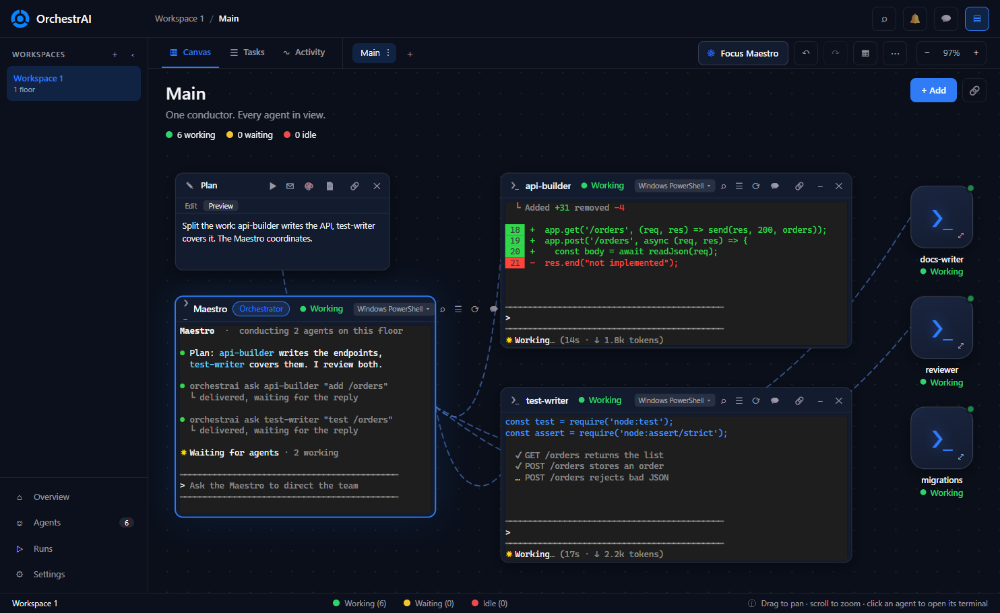
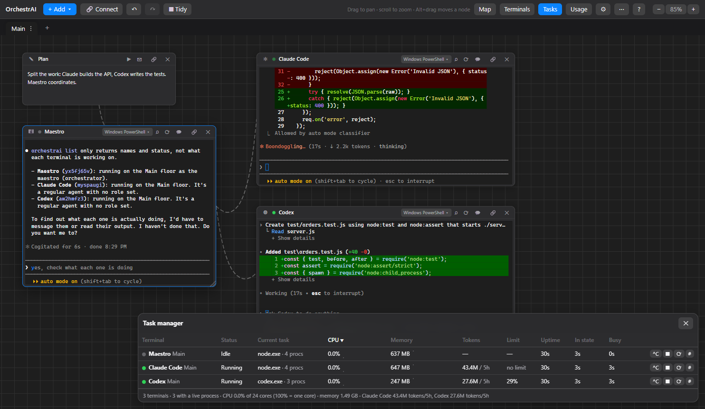
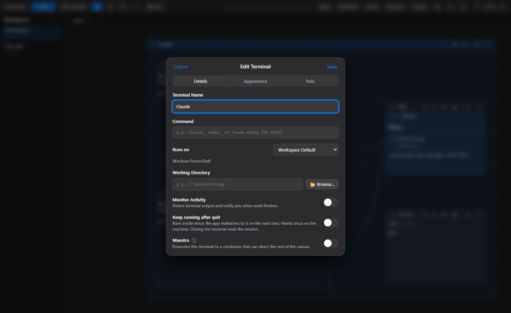

A spatial canvas for orchestrating AI coding agents. Lay out terminals, notes, git and browsers, connect them with ropes, give each agent its own git worktree, and let a Maestro direct the team.
Works with Claude Code, Codex, OpenCode, Antigravity or any CLI.

Stop juggling terminal windows. See who is working, who is waiting and who is done, at a glance.
Open as many terminals, agents and workspaces as your machine can handle. No caps, no paid tiers, no license keys.
A conductor terminal can create, message and read other terminals through a local orchestrai CLI that only listens on 127.0.0.1.
Give each agent its own floor on a new branch. Review every diff, then land it with a no-fast-forward merge, or discard it.
Wire terminals together so they can talk to each other. Connected agents can ask, answer and hand work over.
Keep the terminals you are watching open and shrink the rest to status cards. Working, waiting or idle, always visible.
Every terminal in one table with status, CPU, memory and uptime. Spot a stuck or heavy agent at a glance, and stop or restart it from there.
A live feed of what each agent did and when: started working, waiting for you, gone idle. Filter by state, and get a notification when one finishes.
Not tied to a vendor. Run several agent CLIs side by side, on PowerShell, Git Bash, WSL, SSH or Docker, even on different accounts.
Notes, drawings, file trees, git, chat, a browser portal and an Android device node live on the same canvas.
Watch terminals and answer prompts from a phone or tablet over Tailscale or a tunnel. Off by default.
No account, no telemetry, no cloud required. Workspaces and scrollback stay on your machine in plain JSON, with automatic backups.
The canvas is the whole interface.
Press + Add, pick a terminal, and choose a quick-start preset such as Claude Code or Codex.
Select a node, press C, and click another. A dashed rope links the two.
Mark one terminal as the Maestro and describe the goal. It recruits and directs the rest.
Check each floor's diff, run your checks, then merge the work back or discard it.
The task manager lists every terminal with status, CPU, memory and uptime, so a stuck agent never goes unnoticed.

Choose the command, where it runs, its working directory and its role. Presets make a new agent one click away.

Download an installer from the releases page, or run it from source. Windows is the primary platform; macOS and Linux builds are packaged and smoke-tested in CI.
# requires Node.js 18+ and git
git clone https://github.com/adaumsilva/OrchestrAI.git
cd OrchestrAI
npm install
npm start
Or grab a ready-made installer from the latest release.
No workspace caps, no paid tiers, no license keys. Read it, fork it, change it. Contributions are welcome, including your first one.